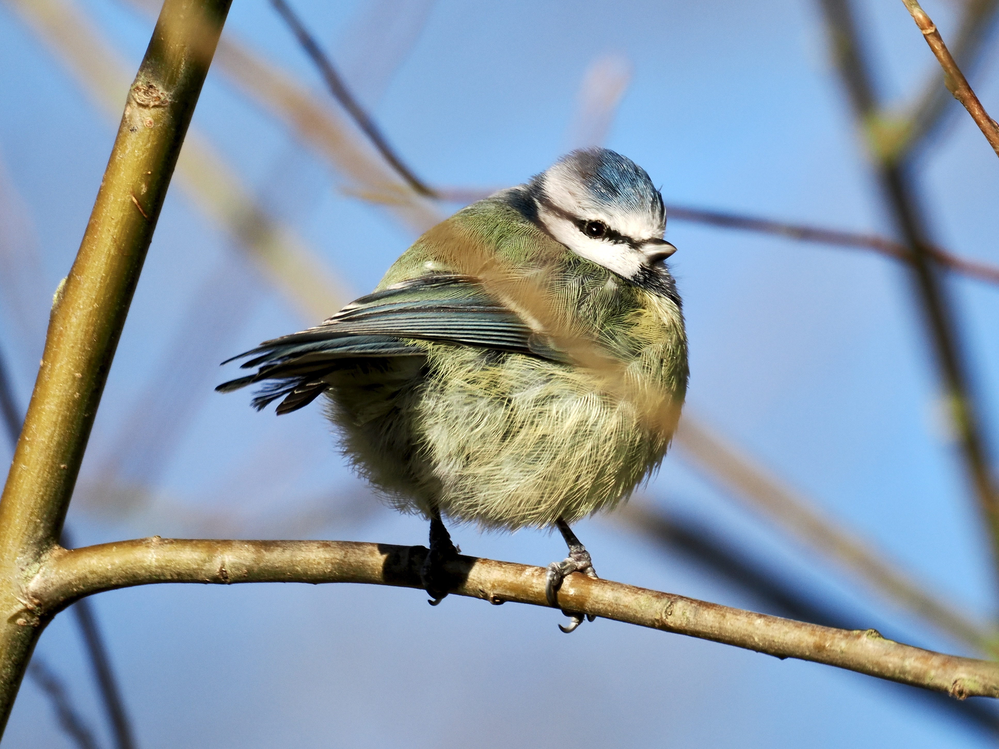

Eurasian Blue Tit
Cyanistes caeruleus
Order: Passeriformes
Family: Paridae

A small, colourful tit. Has a blue cap, white face, and dark eye stripe. Back is greenish; wings bluish. A vertical stripe is sometimes visible on the yellow belly. Why is this one so plump? Birds puff up when it's particularly cold. Blue tits might look sexually monomorphic to us, but males have a brighter cap when viewed under UV light, which birds can see.